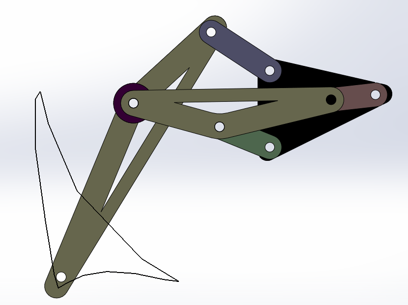

Klann linkage is a planar mechanism designed to simulate the gait of legged animal and function as a wheel replacement, a leg mechanism. The problem, that this project solves is mainly for surveillance, normal bots drive on wheels and belts, that may leave impressions on the terrain but this mechanism has dual advantages, first one being its quite efficient in rough terrains and second is that it walks on rubber tips, that are attached to base of legs, due to which it leaves negligible impressions on ground and thus can be very helpful in surveillance or military operations.
For Live Demonstraion : Table 53


